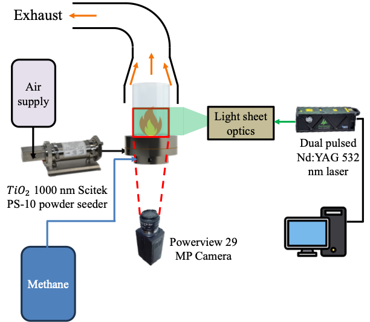
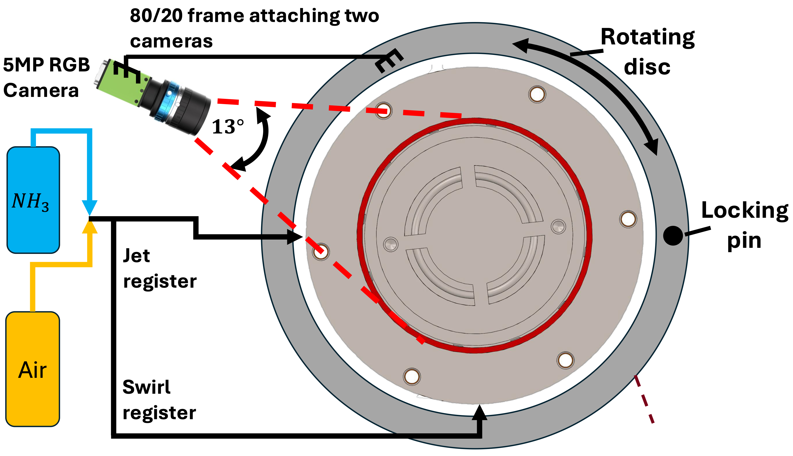

Optical Diagnostics: PIV & 3D Flame Reconstruction
Development and application of laser- and camera-based diagnostic techniques to understand flow structure, turbulence, recirculation, and three-dimensional flame behavior in reacting and non-reacting combustion experiments.
← Back to selected projectsLooking inside the flow and flame
Combustion hardware can be evaluated from temperatures and emissions, but those measurements do not directly show why a flame stabilizes, where recirculation occurs, or how the reacting region changes as the operating condition changes.
I therefore used complementary optical diagnostics to study both sides of the problem: Particle Image Velocimetry (PIV) to measure the gas-flow field, and Computed Tomography of Chemiluminescence (CTC) to reconstruct the three-dimensional reacting region of the flame.
PIV: measuring the flow
PIV uses seeded particles, a pulsed laser sheet, and synchronized image pairs to measure how the flow moves between two closely spaced instants in time.
From these images I extracted velocity fields, reverse-flow regions, turbulence quantities, vorticity, and the size and position of the central recirculation zone.
CTC: reconstructing the flame
CTC uses images of flame chemiluminescence taken from multiple viewing angles and combines them computationally to reconstruct the three-dimensional reacting region.
In other words, instead of seeing only one flat photograph of the flame, the reconstruction provides information about how the reaction zone is distributed in three-dimensional space.
Measuring reacting and non-reacting flow fields
I configured and applied a two-component PIV system to characterize the flow inside the burner. The setup used a dual-pulsed 532 nm Nd:YAG laser, a high-resolution PowerView camera, particle seeding, and synchronized acquisition to capture pairs of images separated by a short time interval.
By tracking the displacement of seeded particles between the image pair, the PIV processing calculates local velocity vectors across the measurement plane. This allowed the burner flow structure to be measured directly rather than inferred only from bulk flow rates.
PIV experimental system
The diagnostic required optical alignment, laser-sheet positioning, camera calibration, seeding, pulse synchronization, and careful management of flame luminosity and reflections during reacting tests.

PIV Measurement Concept
Laser-sheet and camera arrangement used to illuminate seeded particles and capture planar velocity measurements through the optically accessible burner.
Methane PIV Test
Reactive PIV experiment with the laser sheet, seeded flow, optical access, and methane flame operating simultaneously.
Acquisition and troubleshooting
Reactive PIV required more than simply repeating the non-reacting measurement because heat release, flame luminosity, reflections, density gradients, and particle behavior can all reduce image correlation quality.
What I extracted from the PIV measurements
The objective was not only to produce velocity-vector plots, but to convert the measurements into quantitative descriptions of the flow structures responsible for flame stabilization.
Mean Velocity Field
Axial and transverse velocity components were ensemble averaged to identify the main jet, flow expansion, shear layers, and regions of reverse flow.
Central Recirculation Zone
The CRZ was identified from negative mean axial velocity and quantified using metrics such as area, axial length, centroid, width, and reverse-flow structure.
Turbulence
Velocity fluctuations were used to evaluate RMS velocity and in-plane turbulent kinetic energy, helping compare fluctuation intensity between operating conditions.
Vorticity & Shear
Velocity gradients were used to study vorticity and shear-layer structure, particularly around the jet and recirculation-zone boundaries.
Reacting vs. Non-Reacting
Comparing reacting and non-reacting measurements allowed the influence of heat release on the recirculation structure and turbulent flow field to be evaluated.
POD Analysis
Snapshot Proper Orthogonal Decomposition was used to examine coherent fluctuation modes and determine how flow-field energy was distributed among dominant structures.
Reconstructing the three-dimensional flame
Conventional flame imaging produces a two-dimensional projection: all of the light emitted through the depth of the flame is collapsed into one image. That makes it difficult to determine where the reaction zone actually exists in three-dimensional space.
To address this, I used Computed Tomography of Chemiluminescence (CTC). Flame chemiluminescence images are collected from multiple directions, calibrated into a common coordinate system, and reconstructed computationally to estimate the three-dimensional distribution of the reacting region.
It is conceptually similar to a medical CT scan. A medical scanner collects many projections around a patient and reconstructs the inside of the body or brain. Here, I collect many optical views around the flame and use those views to reconstruct the three-dimensional reaction zone.
From imaging concept to experimental system
Instead of requiring a large array of cameras, I developed a rotational imaging approach that allowed the same viewing geometry to be sampled sequentially from multiple angles.

Rotational CTC Measurement System
Concept developed for acquiring flame images from multiple viewing directions using a compact rotational imaging approach.

Built Optical Measurement Setup
Experimental implementation of the imaging mechanism used to acquire calibrated multi-angle flame images for tomographic reconstruction.
CTC reconstruction workflow
The measurement combines mechanical positioning, optical calibration, multi-angle image acquisition, preprocessing, and tomographic reconstruction.
Calibrate
Camera geometry and image scale were calibrated so measurements from different viewing directions could be mapped consistently.
Acquire
Flame chemiluminescence was recorded at multiple viewing angles, with repeated images collected at each orientation.
Process
Python and MATLAB workflows were used for calibration, image processing, averaging, alignment, and quantitative analysis.
Reconstruct
Filtered back projection was used to reconstruct the three-dimensional reacting region from the collection of two-dimensional views.
Measurement details
Connecting flow structure with flame structure
PIV and CTC provide different but complementary information. PIV describes how the gas is moving, while CTC describes where the reacting flame region exists in three dimensions.
Using both diagnostics helps connect changes in jet strength, swirl, recirculation, and turbulence with changes in flame position and reaction zone structure. This is particularly useful when evaluating how burner geometry and operating conditions influence flame stabilization.
Flow
PIV identifies velocity, reverse flow, shear layers, turbulence, and recirculation structures.
Reaction Zone
Chemiluminescence imaging and CTC identify the spatial distribution and evolution of the reacting flame region.
Engineering Interpretation
Together, the measurements provide a more complete picture of how the burner flow field supports or modifies flame stabilization.
Automating high-volume optical datasets
Both diagnostics generate large numbers of images. I developed Python and MATLAB workflows to automate image processing, camera calibration, statistical analysis, batch processing, and visualization rather than processing each frame manually.
Typical datasets contained approximately 200–300 images per experimental condition. Automation made it possible to apply the same processing procedure consistently across multiple operating points and compare quantitative results efficiently.
Challenges beyond image processing
Developing these diagnostics required solving hardware and experimental problems in addition to writing analysis code. Optical alignment, reflections, synchronization, particle seeding, calibration, flame luminosity, and access around the burner all influenced measurement quality.
Optical Alignment
Cameras, laser optics, and the measurement plane had to remain aligned with the physical burner coordinate system.
Synchronization
Camera exposure and dual-laser pulses required precise timing to ensure both PIV frames contained usable seeded-particle images.
Measurement Quality
Reflections, flame background, seeding loss, and optical distortion were evaluated and mitigated to maintain useful experimental data.
Tools & Methods
What this work demonstrates
Experimental Design
Development and implementation of custom diagnostic systems around a physical high-temperature test platform.
Hardware + Software
Integration of cameras, lasers, optics, mechanical hardware, synchronization, calibration, and automated analysis workflows.
Quantitative Validation
Translation of complex optical measurements into quantitative flow and flame metrics useful for engineering interpretation.